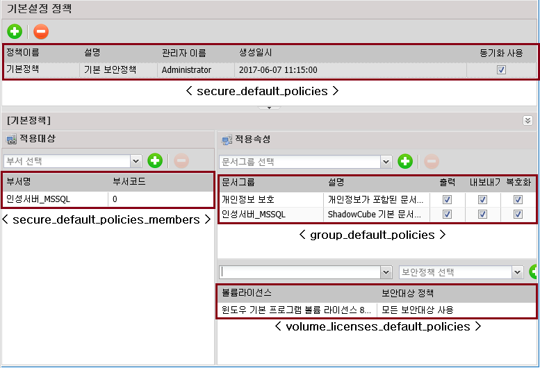
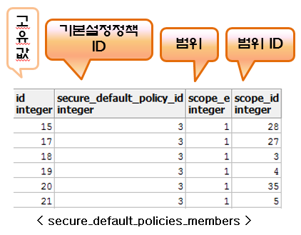
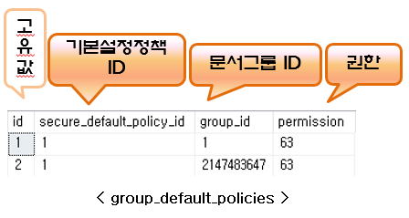
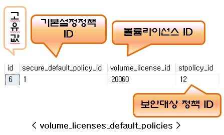

기본설정 정책 (cert_policies, agreement_files)
기본설정 정책은 사용자 추가 시, 어떤 정책을 기본으로 사용하는지에 대한 기능이다.
부서를 지정하였으면, 그 부서의 하위 부서까지 적용된다.

위 그림에서 '인성서버_MSSQL' 부서에 추가되는 사용자들은 기본 문서그룹과 기본 볼륨라이선스가 자동으로 설정되어 추가된다.
※ 테이블 설명



이전